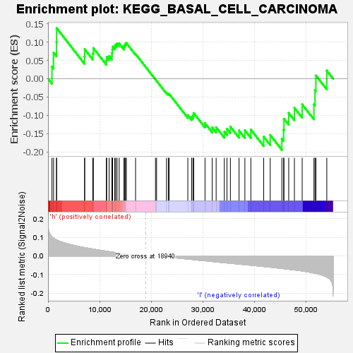

| | | Dataset | VCAN.VCAN.cls#h_versus_l.VCAN.cls#h_versus_l_repos |
| Phenotype | VCAN.cls#h_versus_l_repos |
| Upregulated in class | l |
| GeneSet | KEGG_BASAL_CELL_CARCINOMA |
| Enrichment Score (ES) | -0.1946471 |
| Normalized Enrichment Score (NES) | -0.66643083 |
| Nominal p-value | 0.8989899 |
| FDR q-value | 1.0 |
| FWER p-Value | 1.0 |
Table: GSEA Results Summary

Fig 1: Enrichment plot: KEGG_BASAL_CELL_CARCINOMA
Profile of the Running ES Score & Positions of GeneSet Members on the Rank Ordered List
| SYMBOL | TITLE | RANK IN GENE LIST | RANK METRIC SCORE | RUNNING ES | CORE ENRICHMENT | | 1 | FZD2 | na | 767 | 0.103 | 0.0330 | No |
| 2 | WNT10B | na | 1074 | 0.096 | 0.0712 | No |
| 3 | WNT7B | na | 1639 | 0.086 | 0.1001 | No |
| 4 | APC2 | na | 1671 | 0.085 | 0.1384 | No |
| 5 | BMP2 | na | 7089 | 0.045 | 0.0607 | No |
| 6 | FZD5 | na | 7116 | 0.045 | 0.0806 | No |
| 7 | WNT6 | na | 8684 | 0.037 | 0.0690 | No |
| 8 | HHIP | na | 8793 | 0.036 | 0.0836 | No |
| 9 | TP53 | na | 11306 | 0.025 | 0.0497 | No |
| 10 | DVL1 | na | 11383 | 0.025 | 0.0597 | No |
| 11 | WNT3 | na | 11848 | 0.023 | 0.0618 | No |
| 12 | SMO | na | 12387 | 0.021 | 0.0616 | No |
| 13 | DVL2 | na | 12404 | 0.021 | 0.0708 | No |
| 14 | FZD6 | na | 12474 | 0.021 | 0.0790 | No |
| 15 | DVL3 | na | 12520 | 0.020 | 0.0875 | No |
| 16 | WNT5B | na | 12938 | 0.019 | 0.0885 | No |
| 17 | WNT1 | na | 13126 | 0.018 | 0.0934 | No |
| 18 | TCF7L1 | na | 13386 | 0.017 | 0.0965 | No |
| 19 | GLI1 | na | 13799 | 0.016 | 0.0962 | No |
| 20 | PTCH2 | na | 14738 | 0.012 | 0.0848 | No |
| 21 | WNT5A | na | 14765 | 0.012 | 0.0899 | No |
| 22 | WNT8B | na | 14911 | 0.012 | 0.0925 | No |
| 23 | WNT16 | na | 15032 | 0.011 | 0.0955 | No |
| 24 | BMP4 | na | 15188 | 0.011 | 0.0976 | No |
| 25 | FZD7 | na | 16974 | 0.005 | 0.0676 | No |
| 26 | STK36 | na | 20833 | -0.000 | -0.0022 | No |
| 27 | WNT9A | na | 21053 | -0.001 | -0.0059 | No |
| 28 | SUFU | na | 22967 | -0.005 | -0.0382 | No |
| 29 | CTNNB1 | na | 23324 | -0.006 | -0.0417 | No |
| 30 | WNT4 | na | 23489 | -0.007 | -0.0416 | No |
| 31 | WNT11 | na | 27104 | -0.017 | -0.0995 | No |
| 32 | WNT3A | na | 27849 | -0.019 | -0.1044 | No |
| 33 | FZD3 | na | 28110 | -0.019 | -0.1003 | No |
| 34 | AXIN1 | na | 28245 | -0.020 | -0.0937 | No |
| 35 | FZD1 | na | 30436 | -0.026 | -0.1216 | No |
| 36 | LEF1 | na | 31839 | -0.030 | -0.1334 | No |
| 37 | WNT9B | na | 32596 | -0.032 | -0.1326 | No |
| 38 | GSK3B | na | 34182 | -0.036 | -0.1448 | No |
| 39 | WNT2 | na | 34691 | -0.038 | -0.1369 | No |
| 40 | GLI2 | na | 35361 | -0.039 | -0.1311 | No |
| 41 | FZD4 | na | 37035 | -0.044 | -0.1415 | No |
| 42 | WNT7A | na | 38165 | -0.047 | -0.1407 | No |
| 43 | FZD8 | na | 39321 | -0.050 | -0.1389 | No |
| 44 | AXIN2 | na | 41814 | -0.056 | -0.1583 | No |
| 45 | SHH | na | 43079 | -0.060 | -0.1538 | No |
| 46 | WNT10A | na | 45336 | -0.067 | -0.1641 | Yes |
| 47 | APC | na | 45673 | -0.068 | -0.1392 | Yes |
| 48 | WNT2B | na | 45744 | -0.068 | -0.1094 | Yes |
| 49 | PTCH1 | na | 46660 | -0.071 | -0.0935 | Yes |
| 50 | WNT8A | na | 47771 | -0.075 | -0.0795 | Yes |
| 51 | TCF7 | na | 49277 | -0.080 | -0.0701 | Yes |
| 52 | FZD9 | na | 51555 | -0.092 | -0.0695 | Yes |
| 53 | GLI3 | na | 51760 | -0.093 | -0.0308 | Yes |
| 54 | FZD10 | na | 51938 | -0.094 | 0.0088 | Yes |
| 55 | TCF7L2 | na | 54045 | -0.113 | 0.0221 | Yes |
Table: GSEA details [plain text format]
Fig 2: KEGG_BASAL_CELL_CARCINOMA
Blue-Pink O' Gram in the Space of the Analyzed GeneSet
Fig 3: KEGG_BASAL_CELL_CARCINOMA: Random ES distribution
Gene set null distribution of ES for KEGG_BASAL_CELL_CARCINOMA